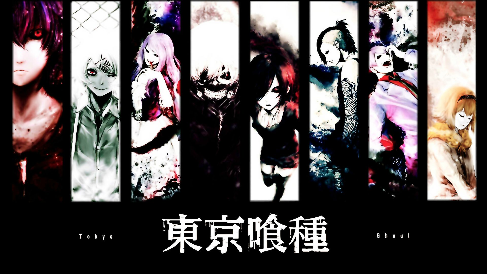

About Kaneki
Kaneki Ken is a main protagonist of the manga created by Sui Ishida. He is living in Tokio, Japan in a world where besides human, race of ghouls does exist. As a result of the accident Kaneki Ken, beforehand an ordinnary human student, becomes a hybrid of a man and ghoul alike. This and events that occur next push him into middle of the ongoing conflict between humans and ghouls.
Characters of the Tokyo Ghoul
Ken Kaneki's Characteristics
- World's first artificially created hybrid of a man and a ghoul
- Struggling between his innocent and good character and cruel, violent world which he is now a part of
- His hair changes color throughout the story and it's awesome
Kaneki's Friends
Kaneki meets awful many very interesting characters both ghouls and humans (click on links belowe to read more):